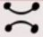
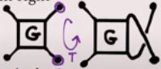

Section 2.2 Rational Tangles
Objectives
Compare and contrast the algebraic structure arising from rational tangles with that of a group of rational functions.
Definition 2.2.1.
A rational tangle is any arrangement of two strands, whose endpoints are fixed at neighboring, disjoint vertices of a square, and which can be created through the processes listed below.
-
Each rational tangle begins as an empty tangle, denoted \(E\text{,}\) in which the strands are horizontal, untwisted, and parallel.
 -
A twist, denoted \(T\) may be added to any rational tangle by detaching and swapping the northeastern and southeastern vertices, passing the former over the latter.
 -
A rotation, denoted \(R\text{,}\) may be performed on a rational tangle by rotating the entire tangle one-quarter turn clockwise.

http://www.ams.org/publicoutreach/feature-column/fc-2017-08. Note, this article uses a counterclockwise rotation convention for \(R\text{.}\)
In a way, rational tangles are similar to the braids we studied in Section 2.1, except that the number of strands is only two (which makes them far simpler) and we permit a rotation so that “horizontal” twists can be mixed with “vertical” twists (which makes them more complex again).
Rational tangles' physical, geometrical construction lends itself well to hands-on activities. The activities in this section are typically done with four willing volunteers in a classroom, holding the ends of long ropes, but a desktop-scale kit of wires or laces can be a substitute.
Activity 2.2.1.
Sketch the rational tangle \(G= T^3RT^2RT\text{.}\) (You may want to build a physical model of it first.)
To discover algebraic structure for rational tangles, we would like to know how the twist \(T\) and the rotation \(R\) interact with one another. For example, while Definition 2.2.1 makes it clear that the set of all rational tangle words, together with the operation of concatenation (sticking words together), is a magma. You may also be able to convince yourself that concatenation is an associative operation, and that the empty tangle corresponds to an identity element - so that the rational tangles form a monoid.
The stickiest question, then, appears to be about invertibility. Given a rational tangle word written using the alphabet of \(T\)'s and \(R\)'s, is there always another word that can be used to untangle the tangle? As the next activities show, the question of undoing the rotation \(R\) is considerably more straightforward than the question of undoing a twist \(T\text{.}\)
Activity 2.2.2.
(a) Beginning with an empty tangle \(E\text{,}\) what is the least number of consecutive rotations \(R\) that will return your tangle back to empty?
(b) Form the tangle \(T^3\text{.}\) Then sketch diagrams of the tangles \(T^3, T^3R, T^3R^2, T^3R^3,\) and \(T^3R^4\text{.}\) How does this support your answer to part (a)?
(c) Form the tangle \(T^2\, R\, T\) and sketch a diagram of it. Then rotate it twice to form \(T^2\, R\, T\, R^2\text{.}\) Is your answer to parts (a)-(b) still supported by this result? (Try moving strings around in your tangle, without undoing any ends, i.e., try performing an isotopy on this tangle to find out.)
Activity 2.2.3.
For this exercise, form any tangle you wish, then thread its four ends through the corners of an envelope, as shown, and seal the envelope shut. Write the letter \(G\) on the front of the envelope, and on the back write \(G\) backward. Leave enough length in the strands outside the envelope to permit further twists and rotations.
Then, add a twist to your tangle to form the new tangle \(G\,T\text{.}\) We wish to figure out how to “cancel” that twist and return to \(G\) itself, using only the very same twist maneuver \(T\) and/or rotations \(R\text{.}\)
(a) If our goal is to “cancel” this twist, explain whether the next step ought to be a twist step (\(T\)) or a rotation step (\(R\)), and why you think your choice gets you closer to the desired goal.
(b) If, at any point in our quest, we perform a rotation \(R\text{,}\) explain whether the next step ought to be a twist step (\(T\)) or a rotation step (\(R\)), and why you think your choice gets you closer to the desired goal. The result of Activity 2.2.2 may be helpful.
(c) Use your answers to (a)-(b) to carry out a strategy to untwist that twist, and use your envelope model to determine what sequence of rational tangle steps completes this equation:
(d) What, according to your answer to (c), is the inverse of the twist \(T\text{?}\)
Armed with the results of Activity 2.2.2 and Activity 2.2.3, we can convince ourselves that the set of rational tangle words, together with the concatenation operation, form a group.
Definition 2.2.4. Rational Tangle Group.
The rational tangle group \(\mathcal{C}\) is defined by the following presentation:
That is, elements of the group consist of words in the alphabet of generators \(T\) and \(R\text{,}\) with the cancellation rules \(R^2 = E\) and \((TR)^3 = E\text{.}\)
Since we know how to invert each of the generators of \(\mathcal{C}\text{,}\) we can have a recipe to invert any rational tangle. The only ingredient we need is the following theorem that holds in any group.
Theorem 2.2.5. Shoes-and-Socks.
Let \(G=(X,\cdot)\) be a group, and \(g,h\in X\) be two elements.
The inverse of the element \((g\cdot h)\) is the composition of the inverses of \(g\) and \(h\text{,}\) in the opposite order:
Video proof.
Activity 2.2.4.
Form the rational tangle \(G = T^3\, R\, T\, R\text{.}\) Then, use Shoes-and-Socks to predict what sequence of \(T\) and \(R\) can restore this tangle to the identity, i.e., what fills in the blank in
Check your answer by performing this sequence of maneuvers on your tangle.
Activity 2.2.5.
How many steps (that is, how long of a rational tangle word) would you predict are necessary to untangle the rational tangle \(G=T^4\) ? Why?
The surprising thing about rational tangles is that the strategy of Activity 2.2.4 is not the only way to write the inverse of a tangle. There may be a shorter way!
Activity 2.2.6.
Form the tangle \(G = T^4\text{.}\) Then use your physical model to show that
How might you explain the difference between this result and your prediction from Activity 2.2.5?
To resolve the mystery of the previous result, we'll discover one more algebraic structure related to rational tangles, that gives rational tangles their name. It comes in the form of a homomorphism from the group of rational tangles into the group of rational functions of a single variable.
Definition 2.2.6.
Let \(t \colon \mathbb{Q}\to\mathbb{Q}\) and \(r \colon \mathbb{Q} \to \mathbb{Q}\) be the rational functions
We call these the generators of the tangling functions group, denoted \(\mathscr{F}\text{,}\) with the operation of function composition \((f,g) \mapsto f\circ g\text{.}\)
That these functions, whose graphs you likely learned in high school algebra, have anything at all to do with rational tangles is quite remarkable, as we will see shortly.
The Geogebra applet embedded below lets you form the compositions of the \(t\) and \(r\) functions using the buttons (suggestively) labeled \(T\) and \(R\text{,}\) beginning with the identity function \(e(x) = x\text{.}\) For example, clicking the sequence \(TTRTRRT\) forms the function composition
Note that the order of function composition is written backward to the order in which the buttons are clicked.
https://www.geogebra.org/m/h2zwxzp4.Activity 2.2.7.
Verify directly (using its formula) that \(r\bigl( r(x) \bigr) = x\text{.}\)
Then, use the applet in Figure 2.2.7 to verify your conclusion. Explain what steps you took, and why they confirm your answer.
Activity 2.2.8.
Simplify an expression for the tangling function \(r\circ t\text{.}\)
If you call this function \(f(x)\text{,}\) then simplify expressions for \(f\circ f\) and \(f\circ f\circ f\text{.}\)
What do you conclude about the behavior of the functions \(t\) and \(r\text{,}\) in light of how the rational tangle alphabet behaves (Definition 2.2.4)?
The result of Activity 2.2.7 and Activity 2.2.8 is the following.
Theorem 2.2.9.
The function \(\varphi \colon \mathcal{C} \to \mathscr{F}\) defined by
is a homomorphism onto its image.
In other words, because the functions \(t(x)\) and \(r(x)\) behave under function composition exactly as the rational tangle alphabet \(T\) and \(R\) behave under concatenation, we can represent the structure of the rational tangle group using these functions instead. That's a remarkable feat of mimicry!
The only (slight) catch is that these functions encode slightly more structure than the tangles do, as the following activity shows.
Activity 2.2.9.
Find a formula for the composition \(t\bigl( r(\, t(x)\, ) \bigr)\text{,}\) using algebra and/or the applet in Figure 2.2.7.
Then, form the rational tangle \(TRT\text{.}\) Explain why (a) we would have expected these results to tell the same story as one another, but (b) they do not, in fact, agree.
The disagreement that the previous activity surfaces can be resolved, as it turns out, by focusing not on the entire functions in \(\mathscr{F}\) but only on their y-intercepts.
Definition 2.2.10.
The fraction of a tangle function \(f\in \mathscr{F}\) is its \(y\)-intercept, the rational number \(f(0)\text{.}\)
The fraction invariant of a rational tangle \(G \in \mathcal{C}\) is the fraction of its associated tangle function, \(F(G) = \bigl( \varphi(G) \bigr)(0)\text{.}\)
For example, you can check that for the empty tangle \(E\) we have
Likewise, for the single twist \(T\) we have
Lastly, if we were to rotate a double twist to form \(T^2R\) we would have
You'll notice that the values of the fraction, labeled as the \(y\)-intercept in Figure 2.2.7, increase by 1 with each twist \(T\) that is added, and are opposite-reciprocated with each rotation \(R\text{.}\)
Theorem 2.2.11.
There is a one-to-one correspondence between rational tangles \(G \in \mathcal{C}\) and rational numbers \(F(G) \in \mathbb{Q}\text{.}\)
In other words, every rational tangle is associated to one and only one rational number via the operation of finding its tangle invariant, and every rational number is associated to one and only one rational tangle!
Activity 2.2.10.
Use either algebra or the applet in Figure 2.2.7 to compute the tangle invariants \(F\bigl( T^2 R T^3 R T \bigr)\) and \(F\bigl( TRT^3RT^3RT \bigr)\text{.}\)
What can you conclude about the two rational tangles \(G_1 = T^2RT^3RT\) and \(G_2 = TRT^3RT^3RT\) ? Why?
Activity 2.2.11.
Use the applet in Figure 2.2.7 to discover a rational tangle \(G\) having the fraction \(F(G) = -\frac79\text{.}\)
Can you describe a general strategy for finding such a rational tangle, given its fraction invariant?
Activity 2.2.12.
Return to Activity 2.2.6. Form the tangle \(G = T^4\) in the applet in Figure 2.2.7, and then spell out the remaining letters of its inverse.
Can you describe a general strategy for finding the inverse of a rational tangle, using its fraction invariant?